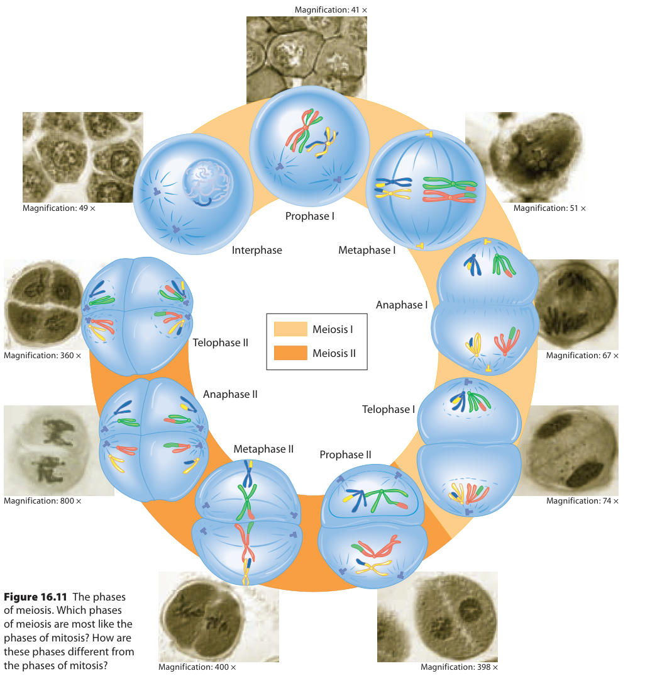

<section class="course-page" hidden="" id="lesson-06"><div class="p2-topic"><header class="page-header"><p class="eyebrow">Learn · Chapter 16</p><h1 data-canvas-edit-key="ch16-l06-title" data-canvas-helper-edit-key="ch16-l06-title">Meiosis I and separation of homologous chromosomes</h1><p class="lesson-question">How is the number of chromosome sets reduced?</p><div class="goal-strip"><div><p class="section-label">Learning goal</p><p data-canvas-edit-key="ch16-l06-goal" data-canvas-helper-edit-key="ch16-l06-goal">Trace meiosis I and explain why separation of homologues produces haploid chromosome sets while chromatids remain paired.</p></div><div><p class="section-label">Before you begin</p><p data-canvas-edit-key="ch16-l06-prior" data-canvas-helper-edit-key="ch16-l06-prior">DNA replicates before meiosis begins. Homologous chromosomes are not sister chromatids.</p></div></div><details class="page-guide"><summary><strong>How to complete this lesson</strong> Learn → worked example → practise → lesson check</summary><div class="guide-body"><ol><li>Read the explanation and its diagrams. Open a bold term when you need a definition.</li><li>Follow the worked example, then try both supported questions. Select <strong>Check answer</strong> for feedback.</li><li>Open the required check and select <strong>Start</strong>. Correct both selections to unlock writing.</li><li>Write each explanation and select its <strong>Save written response</strong> button. Editing saved writing makes it a draft again.</li><li>Select <strong>Submit and finish</strong> to complete the check. Find your records in <strong>All My Work</strong>.</li></ol><p><strong>Expected work:</strong> one completed lesson check. Supported practice, videos and textbook questions are optional. Saved writing is not automatically graded.</p></div></details><div class="textbook-band"><div><strong>Optional embedded reading</strong><p>Chapter 16 · printed pp. 563–566</p></div><p><a data-open-pdf="563" href="#textbook-library">Open p. 563</a> · <a data-open-pdf="566" href="#textbook-library">Open p. 566</a></p></div><p class="terms-line lesson-term-strip"><strong>Key terms:</strong> <button aria-haspopup="dialog" class="bio-term" data-term-id="ch16-word-meiosis-i" type="button">meiosis I</button> · <button aria-haspopup="dialog" class="bio-term" data-term-id="ch16-word-synapsis" type="button">synapsis</button> · <button aria-haspopup="dialog" class="bio-term" data-term-id="ch16-word-tetrad" type="button">tetrad</button> · <button aria-haspopup="dialog" class="bio-term" data-term-id="ch16-word-reduction-division" type="button">reduction division</button></p><details class="vocab-help lesson-vocabulary-help"><summary>Vocabulary help</summary><section aria-labelledby="lesson-06-anchor-words" class="lesson-words"><p class="section-label">Key terms</p><h2 id="lesson-06-anchor-words">Words for this lesson</h2><p>Use these definitions when you need help with a term.</p><dl><div><dt><button aria-haspopup="dialog" class="bio-term" data-term-id="ch16-word-meiosis-i" type="button">meiosis I</button></dt><dd>The first meiotic division, in which homologous chromosomes separate.</dd></div><div><dt><button aria-haspopup="dialog" class="bio-term" data-term-id="ch16-word-synapsis" type="button">synapsis</button></dt><dd>Pairing of homologous chromosomes during prophase I.</dd></div><div><dt><button aria-haspopup="dialog" class="bio-term" data-term-id="ch16-word-tetrad" type="button">tetrad</button></dt><dd>A paired set of two replicated homologous chromosomes containing four chromatids.</dd></div><div><dt><button aria-haspopup="dialog" class="bio-term" data-term-id="ch16-word-reduction-division" type="button">reduction division</button></dt><dd>A division that reduces chromosome sets from diploid to haploid, as in meiosis I.</dd></div></dl></section></details></header><div class="content-section" data-canvas-edit-key="ch16-l06-teaching-01" data-canvas-helper-edit-key="ch16-l06-teaching-01" id="ch16-l06-teaching-01"><h2>Pair homologues after one round of replication</h2>
<p>In humans, meiosis occurs in germ-cell lineages in the ovaries and testes as part of gamete formation. It reduces two homologous chromosome sets to one, so fertilization can restore the diploid number. It also helps produce new genetic combinations. First follow the reduction step; the detailed second division and sources of variation follow in later lessons.</p>
<p data-canvas-edit-key="ch16-l06-teaching-01-p1" data-canvas-helper-edit-key="ch16-l06-teaching-01-p1">DNA replicates during S phase before meiosis. Each chromosome now contains two <button aria-haspopup="dialog" class="bio-term" data-term-id="ch16-word-sister-chromatids" type="button">sister chromatids</button> joined at the centromere region. Replication doubles DNA, not the number of homologous sets. Homologues are corresponding chromosomes, one inherited from each parent; they carry the same kinds of genes at corresponding positions but may carry different versions.</p>
<p data-canvas-edit-key="ch16-l06-teaching-01-p2" data-canvas-helper-edit-key="ch16-l06-teaching-01-p2">During <button aria-haspopup="dialog" class="bio-term" data-term-id="ch16-word-prophase" type="button">prophase</button> I, <button aria-haspopup="dialog" class="bio-term" data-term-id="ch16-word-homologous-chromosomes" type="button">homologous chromosomes</button> pair closely through <button aria-haspopup="dialog" class="bio-term" data-term-id="ch16-word-synapsis" type="button">synapsis</button>. Two replicated homologues together form a <button aria-haspopup="dialog" class="bio-term" data-term-id="ch16-word-tetrad" type="button">tetrad</button>: two chromosomes containing four chromatids. This is pairing within a cell, not fusion of gametes. Corresponding regions of non-sister chromatids can exchange DNA during crossing over, so after exchange the sisters need not remain genetically identical.</p>
<figure class="science-figure" data-figure-id="ch16-source-meiosis"><div class="figure-toolbar"><strong>The two divisions of meiosis</strong><button class="text-link" data-enlarge-figure="ch16-source-meiosis" type="button">View larger</button></div><figcaption>First trace homologous chromosome separation, then sister-chromatid separation. There is one premeiotic replication, not a second S phase between the two divisions. Inquiry into Biology, Chapter 16, p. 564.</figcaption></figure>
<p>Use the figure's pale-orange meiosis-I half first: prophase I, metaphase I, anaphase I and telophase I. It models a species with two chromosome types, long and short, so the starting cell is 2n = 4. Four colours trace the individual chromosomes; they are not a two-colour key for all maternal versus all paternal chromosomes. Mixed-colour tips show exchange. The circular page layout does not mean DNA replicates again between the two divisions.</p></div><div class="content-section" data-canvas-edit-key="ch16-l06-teaching-02" data-canvas-helper-edit-key="ch16-l06-teaching-02" id="ch16-l06-teaching-02"><h2>Align the pairs, then send one of each type to each pole</h2>
<p data-canvas-edit-key="ch16-l06-teaching-02-p1" data-canvas-helper-edit-key="ch16-l06-teaching-02-p1">At <button aria-haspopup="dialog" class="bio-term" data-term-id="ch16-word-metaphase" type="button">metaphase</button> I, the homologues that paired during prophase I align as tetrads at the equator. Spindle attachments orient the two homologues toward opposite poles; each <button aria-haspopup="dialog" class="bio-term" data-term-id="ch16-word-chromosome" type="button">chromosome</button>'s sister chromatids stay together. This differs from mitosis, where individual replicated chromosomes align and sisters face opposite poles.</p>
<p>In this figure's metaphase-I cell, the poles are at the top and bottom. The short blue/yellow homologous pair is on the left; the long green/red pair is on the right. Look across the equator between the upper and lower rows: each pole faces one short and one long chromosome. Left versus right identifies the two pairs, not the two future daughters.</p>
<p data-canvas-edit-key="ch16-l06-teaching-02-p2" data-canvas-helper-edit-key="ch16-l06-teaching-02-p2">During <button aria-haspopup="dialog" class="bio-term" data-term-id="ch16-word-anaphase" type="button">anaphase</button> I, each chromosome moves away from its homologue while its sisters remain joined. Follow the predominantly blue short chromosome and green long chromosome toward the upper pole, and the yellow short chromosome and red long chromosome toward the lower pole. Each group includes one of each type. Sending both long homologues to one daughter and both short homologues to the other would leave each daughter missing a chromosome type.</p>
<p data-canvas-edit-key="ch16-l06-teaching-02-p3" data-canvas-helper-edit-key="ch16-l06-teaching-02-p3">The orientation of one pair is independent of another pair. A normal daughter can therefore receive a mixture of maternal and paternal homologues, not necessarily one parent's entire set. Different pair orientations change combinations while preserving one chromosome of each type in each daughter.</p></div><div class="content-section" data-canvas-edit-key="ch16-l06-teaching-03" data-canvas-helper-edit-key="ch16-l06-teaching-03" id="ch16-l06-teaching-03"><h2>Count sets separately from copies</h2>
<p data-canvas-edit-key="ch16-l06-teaching-03-p1" data-canvas-helper-edit-key="ch16-l06-teaching-03-p1">At the end of <button aria-haspopup="dialog" class="bio-term" data-term-id="ch16-word-meiosis-i" type="button">meiosis I</button>, each daughter has one homologue of each chromosome type. That is one complete set, so it is haploid. Meiosis I is called a reduction division because it reduces the number of sets from two to one. It does not remove half the types of genes; it separates the two homologues of each type.</p>
<p data-canvas-edit-key="ch16-l06-teaching-03-p2" data-canvas-helper-edit-key="ch16-l06-teaching-03-p2">In the 2n = 4 model, each daughter has n = 2 chromosomes. Both are still replicated, giving four chromatids per daughter. An X-shaped chromosome can therefore belong to a haploid cell: shape tells you about joined copies, not how many homologous sets are present. During anaphase I, before the cell is physically separated, count each pole's group separately from the whole cell.</p>
<p data-canvas-edit-key="ch16-l06-teaching-03-p3" data-canvas-helper-edit-key="ch16-l06-teaching-03-p3">Telophase-I details vary among organisms, but there is no new S phase before meiosis II. In that second division, sister chromatids separate; they do not first acquire another pair of copies. For the retained optional questions that ask about both divisions or genetic variation, use the complete reading on pp.563–566 and the figure's darker-orange half. The later lessons develop those mechanisms in detail.</p></div><div class="worked-example" data-canvas-edit-key="ch16-l06-worked" data-canvas-helper-edit-key="ch16-l06-worked" id="ch16-l06-worked"><p class="section-label">Worked example</p><h3>Trace the actual 2n = 4 model</h3>
<p>The starting cell has one long homologous pair and one short homologous pair. DNA has already replicated. Determine the counts in each normal daughter after meiosis I.</p>
<ol><li><strong>Establish the units.</strong> Two pairs mean four chromosomes. Two chromatids per replicated chromosome give eight chromatids in the starting cell.</li><li><strong>Identify the pairing step.</strong> Homologues pair by synapsis in prophase I, making two tetrads. At metaphase I, these already-paired units align at the equator; pairing does not begin there.</li><li><strong>Follow separation.</strong> At anaphase I, homologues move apart while sisters remain joined. Trace one short and one long chromosome toward each pole in the figure.</li><li><strong>Count within one daughter.</strong> It receives two chromosomes, each still made of two chromatids: two chromosomes and four chromatids. Repeat for the other daughter.</li><li><strong>Explain ploidy.</strong> One of each type is one set, n = 2. The daughter is haploid despite retaining duplicated chromosomes.</li></ol>
<p>For another species, first halve its given diploid count to find chromosomes per meiosis-I daughter, then double that daughter count to find chromatids. Keep the boundary “per daughter” explicit, and do not apply a second reduction just because the chromosomes are still X-shaped.</p></div><section class="content-section guided-practice" data-canvas-edit-key="ch16-l06-guided" data-canvas-helper-edit-key="ch16-l06-guided" id="ch16-l06-guided"><h2>Practise with support</h2><h3>Apply the explanation</h3><p>Try both questions. Use the hint to revise your thinking after an incorrect answer.</p><div class="practice-question" data-guided-item="ch16-l06-guided-q1"><label for="ch16-l06-guided-q1">What separates during anaphase I?</label><select id="ch16-l06-guided-q1"><option value="">Choose an answer</option><option value="DNA bases from their sugars">DNA bases from their sugars</option><option value="Homologous chromosomes">Homologous chromosomes</option><option value="Sister chromatids in every chromosome">Sister chromatids in every chromosome</option></select><div class="actions"><button data-guided-check="" type="button">Check answer</button></div><p aria-live="polite" data-revision-feedback="" role="status"></p></div><div class="practice-question" data-guided-item="ch16-l06-guided-q2"><label for="ch16-l06-guided-q2">For a species with 2n = 12, how many chromosomes are in each normal cell after meiosis I?</label><select id="ch16-l06-guided-q2"><option value="">Choose an answer</option><option value="12">12</option><option value="24">24</option><option value="6">6</option></select><div class="actions"><button data-guided-check="" type="button">Check answer</button></div><p aria-live="polite" data-revision-feedback="" role="status"></p></div></section><div class="stop-check"><p class="section-label">Stop and think</p><h2>Try this before opening the explanation</h2><p>Is meiosis I just mitosis performed on a diploid cell?</p><details><summary>Show the explanation</summary><p>No. Homologue pairing and segregation reduce chromosome sets in meiosis I.</p></details></div><aside class="video-companion"><div class="video-copy"><p class="eyebrow">Optional video support</p><h3>Meiosis I and separation of homologous chromosomes — video support</h3><p><strong>As you watch:</strong> Trace meiosis I and explain why separation of homologues produces haploid chromosome sets while chromatids remain paired.</p><p class="resource-note">Optional video. Internet access is required. The explanation below covers the idea without the video.</p><a href="https://www.youtube.com/watch?v=VzDMG7ke69g" rel="noopener noreferrer" target="_blank">Open on YouTube</a></div><div class="video-visual"><div class="video-stage" data-video-stage="VzDMG7ke69g"><button data-play-video="VzDMG7ke69g" type="button">Load video</button></div><div class="concept-summary"><h4>Read the explanation</h4><p>At metaphase I, homologous pairs align at the equator. Their orientation relative to other pairs can vary. A replicated maternal homologue faces one pole and its paternal partner faces the other, but different pairs can orient independently. During anaphase I, the homologues separate. The sister chromatids of each chromosome normally remain joined. The event is therefore different from mitotic anaphase, which separates sister chromatids. After this distribution, each future daughter receives one chromosome of each homologous pair. It has one set rather than two. That is the reduction in ploidy.</p></div></div></aside><details class="activity-disclosure"><summary>Open required check · Meiosis I and separation of homologous chromosomes</summary><section class="activity" data-check-id="ch16-check-06" data-required-check=""><h2>Explain what you have learned</h2><p class="required-note">This check counts toward chapter progress. Correct the 2 selections to unlock 2 written explanations. Saving writing records your response; it does not grade its accuracy.</p><div class="run-head"><div class="actions"><button data-start-check="" type="button">Start</button><button data-redo-check="" hidden="" type="button">Redo this check</button></div><span class="timer" data-check-timer="">Not started</span></div><p aria-live="polite" class="run-status" data-check-status=""></p><fieldset data-check-body="" disabled=""><legend class="sr-only">Required chapter check</legend><div class="check-question" data-check-question="ch16-l06-check-mc-1"><p class="eyebrow">Selection 1</p><h3 data-canvas-edit-key="ch16-l06-check-mc-1-prompt" data-canvas-helper-edit-key="ch16-l06-check-mc-1-prompt" id="ch16-l06-check-mc-1-prompt">Why is a cell after meiosis I haploid even though its chromosomes remain replicated?</h3><fieldset aria-labelledby="ch16-l06-check-mc-1-prompt"><label class="choice-row"><input data-check-choice="ch16-l06-check-mc-1" name="ch16-l06-check-mc-1" type="radio" value="It has already completed fertilization"/><span>It has already completed fertilization</span></label><label class="choice-row"><input data-check-choice="ch16-l06-check-mc-1" name="ch16-l06-check-mc-1" type="radio" value="It has no centromeres"/><span>It has no centromeres</span></label><label class="choice-row"><input data-check-choice="ch16-l06-check-mc-1" name="ch16-l06-check-mc-1" type="radio" value="It has one homologue of each chromosome type"/><span>It has one homologue of each chromosome type</span></label><label class="choice-row"><input data-check-choice="ch16-l06-check-mc-1" name="ch16-l06-check-mc-1" type="radio" value="It contains only one DNA molecule total"/><span>It contains only one DNA molecule total</span></label></fieldset><button data-check-answer="ch16-l06-check-mc-1" type="button">Check answer</button><p aria-live="polite" class="inline-feedback" data-feedback=""></p></div><div class="check-question" data-check-question="ch16-l06-check-mc-2"><p class="eyebrow">Selection 2</p><h3 data-canvas-edit-key="ch16-l06-check-mc-2-prompt" data-canvas-helper-edit-key="ch16-l06-check-mc-2-prompt" id="ch16-l06-check-mc-2-prompt">What makes a tetrad different from one replicated chromosome?</h3><fieldset aria-labelledby="ch16-l06-check-mc-2-prompt"><label class="choice-row"><input data-check-choice="ch16-l06-check-mc-2" name="ch16-l06-check-mc-2" type="radio" value="A tetrad contains no DNA"/><span>A tetrad contains no DNA</span></label><label class="choice-row"><input data-check-choice="ch16-l06-check-mc-2" name="ch16-l06-check-mc-2" type="radio" value="A tetrad is always four unreplicated gametes"/><span>A tetrad is always four unreplicated gametes</span></label><label class="choice-row"><input data-check-choice="ch16-l06-check-mc-2" name="ch16-l06-check-mc-2" type="radio" value="A tetrad is a single RNA molecule"/><span>A tetrad is a single RNA molecule</span></label><label class="choice-row"><input data-check-choice="ch16-l06-check-mc-2" name="ch16-l06-check-mc-2" type="radio" value="A tetrad contains two replicated homologues and four chromatids"/><span>A tetrad contains two replicated homologues and four chromatids</span></label></fieldset><button data-check-answer="ch16-l06-check-mc-2" type="button">Check answer</button><p aria-live="polite" class="inline-feedback" data-feedback=""></p></div><p class="unlock-message" data-unlock-message="">Answer the selections correctly to unlock the writing.</p><fieldset data-writing-gate="" disabled=""><legend class="sr-only">Written explanations</legend><div class="writing-question" data-writing-question="ch16-l06-check-writing-1"><p class="eyebrow">Written explanation 1</p><label data-canvas-edit-key="ch16-l06-check-writing-1-prompt" data-canvas-helper-edit-key="ch16-l06-check-writing-1-prompt" for="ch16-l06-check-writing-1">Explain how meiosis I reduces chromosome number without separating sister chromatids.</label><textarea aria-describedby="ch16-l06-check-writing-1-status" data-check-writing="ch16-l06-check-writing-1" data-limit="3200" id="ch16-l06-check-writing-1" rows="6"></textarea><p class="writing-status">Maximum 3200 characters. Explain the biology in your own words.</p><button data-save-writing="ch16-l06-check-writing-1" type="button">Save written response</button><p aria-live="polite" class="writing-status" data-writing-status="" id="ch16-l06-check-writing-1-status"></p><details data-locked="true"><summary>Compare after saving your own response</summary><p>Homologous pairs align and the two homologues move to opposite poles during anaphase I. Each future daughter receives one chromosome of each pair, so it is haploid. The sister chromatids within each chromosome remain together until meiosis II.</p><div class="answer-criteria"><strong>Check your explanation for:</strong><ul><li>Identifies the relevant structures or quantities.</li><li>Explains the causal relationship or calculation, not just the final result.</li><li>Uses the stated evidence and avoids a stronger conclusion than it supports.</li></ul></div></details></div><div class="writing-question" data-writing-question="ch16-l06-check-writing-2"><p class="eyebrow">Written explanation 2</p><label data-canvas-edit-key="ch16-l06-check-writing-2-prompt" data-canvas-helper-edit-key="ch16-l06-check-writing-2-prompt" for="ch16-l06-check-writing-2">For a 2n = 8 species, describe chromosome and chromatid counts after meiosis I.</label><textarea aria-describedby="ch16-l06-check-writing-2-status" data-check-writing="ch16-l06-check-writing-2" data-limit="3200" id="ch16-l06-check-writing-2" rows="6"></textarea><p class="writing-status">Maximum 3200 characters. Explain the biology in your own words.</p><button data-save-writing="ch16-l06-check-writing-2" type="button">Save written response</button><p aria-live="polite" class="writing-status" data-writing-status="" id="ch16-l06-check-writing-2-status"></p><details data-locked="true"><summary>Compare after saving your own response</summary><p>Each cell has n = 4 chromosomes. Each chromosome is still replicated, so there are 8 chromatids per cell. The cell is haploid because it has one homologue of each type, not because the chromatids have separated.</p><div class="answer-criteria"><strong>Check your explanation for:</strong><ul><li>Identifies the relevant structures or quantities.</li><li>Explains the causal relationship or calculation, not just the final result.</li><li>Uses the stated evidence and avoids a stronger conclusion than it supports.</li></ul></div></details></div></fieldset><div class="actions"><button data-finish-check="" type="button">Submit and finish</button></div></fieldset></section></details><nav aria-label="Previous and next topics" class="lesson-footer"><a href="#lesson-05">← Cytokinesis, growth and tissue maintenance</a><a class="next" href="#lesson-07">Next: Meiosis II and production of haploid cells →</a></nav><div class="content-section textbook-practice-lesson-link"><a data-textbook-topic="lesson-06" href="#textbook-practice">Optional textbook practice for Meiosis I and separation of homologous chromosomes</a></div></div></section>